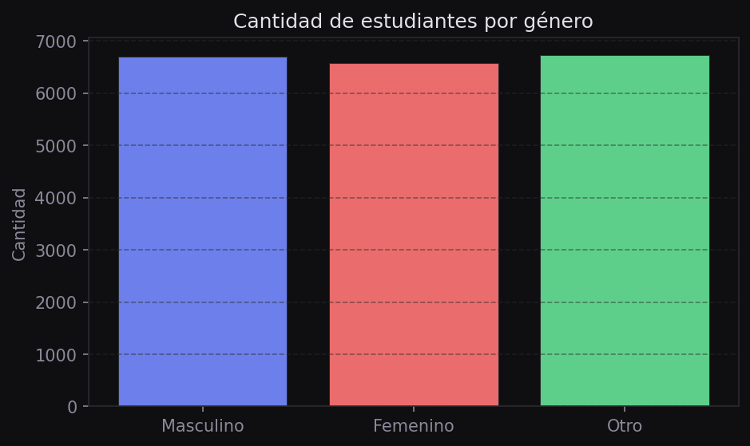
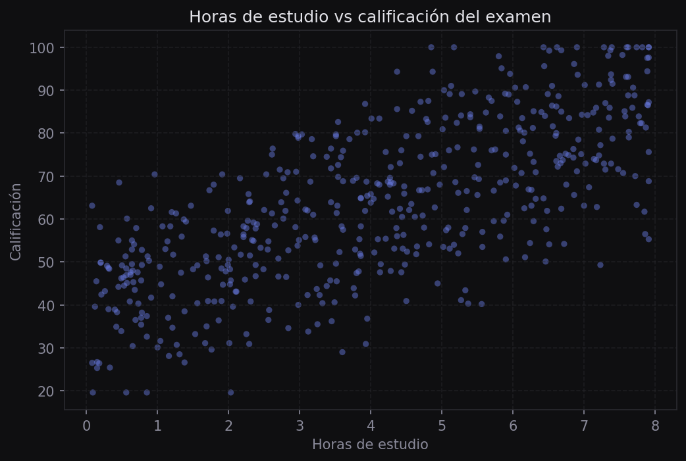
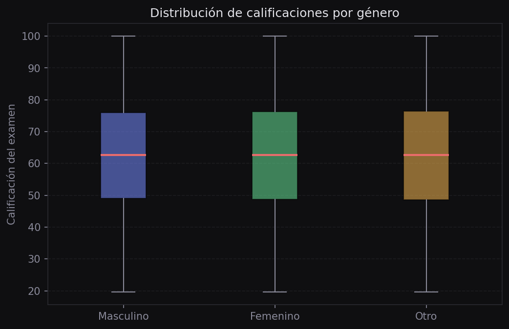
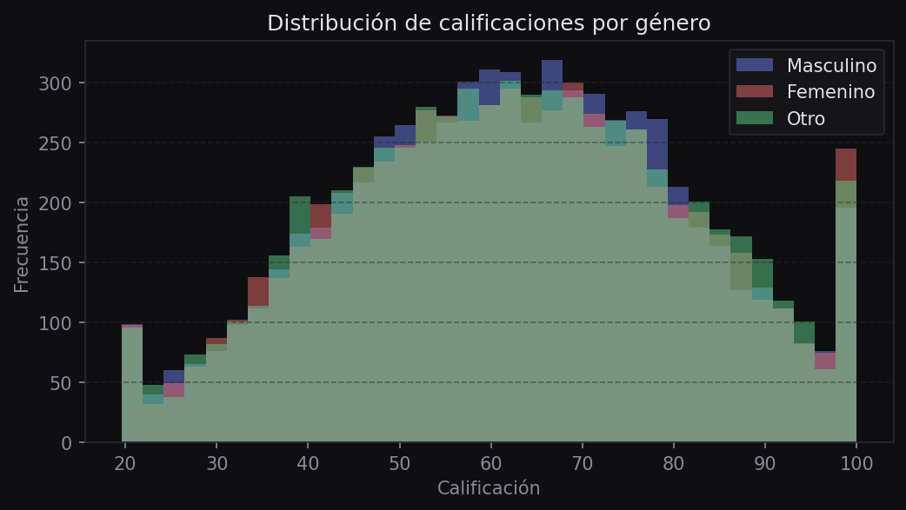
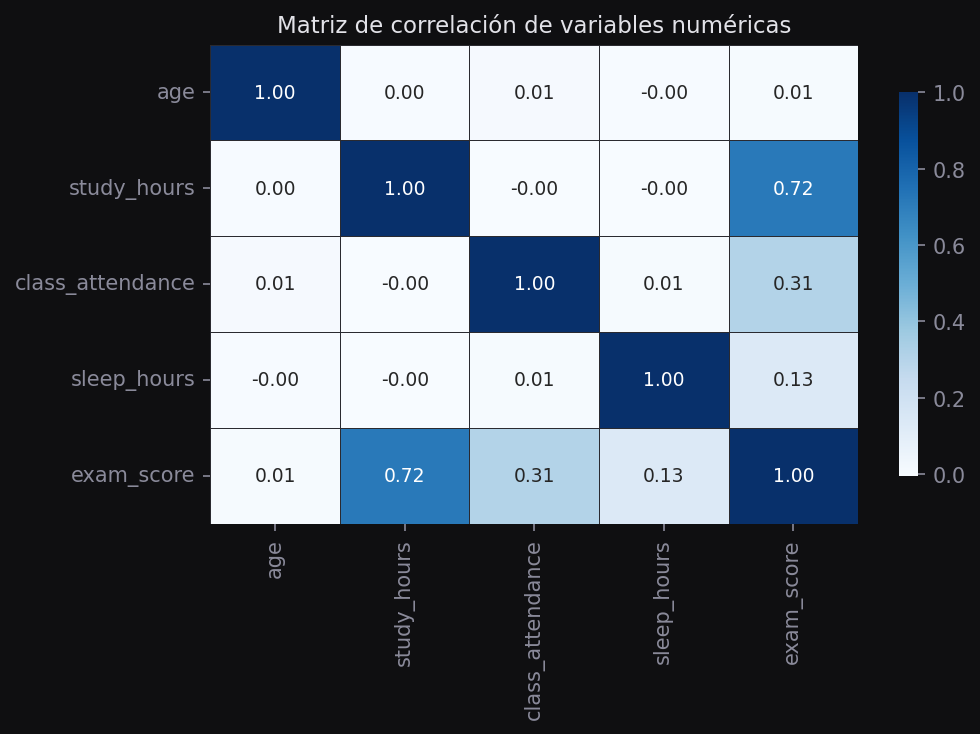

Análisis Exploratorio de Datos
El EDA es la etapa previa al modelado: permite conocer la estructura del dataset, identificar distribuciones, relaciones entre variables y posibles problemas en los datos antes de ajustar cualquier modelo.
¿Qué es el EDA?
El análisis exploratorio precede al modelado y responde preguntas descriptivas sobre los datos:
- ¿Cuántos registros y columnas hay?
- ¿Hay valores faltantes o duplicados?
- ¿Cómo se distribuyen las variables numéricas?
- ¿Qué relaciones existen entre variables?
- ¿Hay grupos o segmentos en los datos?
Carga y exploración inicial
head, tail y describe
Los primeros métodos que se usan al recibir un dataset nuevo:
import pandas as pd
import matplotlib.pyplot as plt
import seaborn as sns
df = pd.read_csv("data/csvs/examenes.csv")
df.head() # primeras 5 filas
df.tail() # últimas 5 filas
df.shape # (20000, 13) — filas y columnas
df.info() # tipos de datos y valores nulos
df.describe() # estadísticas descriptivas (solo numéricas)describe() calcula para cada columna numérica: cantidad, media, desviación estándar, mínimo, cuartiles y máximo. Es el resumen estadístico básico.
Tipos de datos
Las columnas pueden ser numéricas (continuas o discretas) o categóricas. Identificarlas correctamente es clave para elegir la visualización adecuada:
df.dtypes # tipo de cada columna
# Variables numéricas del dataset
numericas = df.select_dtypes(include="number").columns.tolist()
# Variables categóricas
categoricas = ["gender", "course", "internet_access",
"sleep_quality", "study_method",
"facility_rating", "exam_difficulty"]
# Valores únicos de una variable categórica
df["study_method"].unique()
df["gender"].value_counts()
Filtros booleanos
Para analizar subconjuntos de los datos, se crean máscaras booleanas: condiciones que devuelven True o False para cada fila.
# Filtrar un solo género
filtro_mujeres = df["gender"] == "female"
df_mujeres = df[filtro_mujeres]
# Filtrar múltiples condiciones (&, |)
filtro = (df["gender"] == "female") & (df["study_hours"] > 5)
df_filtrado = df[filtro]
# Comparar distribuciones entre grupos
scores_mujeres = df[df["gender"] == "female"]["exam_score"]
scores_hombres = df[df["gender"] == "male"]["exam_score"]
print(scores_mujeres.mean(), scores_hombres.mean())


Los operadores and, or de Python no funcionan con filtros de Pandas. Hay que usar &, | y envolver cada condición en paréntesis.
Combinación de variables
Crear nuevas columnas combinando variables existentes puede revelar patrones que no son visibles por separado:
# Combinar dos variables categóricas en una sola
df["metodo_calidad"] = df["study_method"] + " - " + df["sleep_quality"]
# Ejemplo de valores resultantes:
# "coaching - poor", "online videos - good", "self-study - average"
# Visualizar la nueva combinación
sns.scatterplot(data=df, x="study_hours", y="exam_score",
hue="metodo_calidad", alpha=0.5)
plt.show()Agrupaciones con groupby
groupby() divide el DataFrame en grupos según el valor de una o varias columnas y permite calcular estadísticas por grupo:
# Promedio de calificación por método de estudio y calidad de sueño
resumen = (df.groupby("metodo_calidad")["exam_score"]
.agg(["mean", "std", "median"])
.sort_values("mean", ascending=False))
print(resumen.head(5))Resultado esperado:
# mean std median
# coaching - good 73.84 17.44 74.60
# coaching - average 69.04 17.54 69.05
# mixed - good 68.29 17.55 68.90
# group study - good 65.86 17.90 66.20
# online videos - good 64.89 18.37 65.20Ejemplo Comparar promedio por método de estudio con barplot
for col in categoricas:
sns.barplot(data=df, y="exam_score", hue=col, errorbar="sd")
plt.title(f"Promedio de calificación por {col}")
plt.xticks(rotation=30)
plt.show()Correlación de Pearson
La correlación de Pearson mide la fuerza y dirección de la relación lineal entre dos variables numéricas. Su valor oscila entre −1 y 1:
- r = 1: correlación lineal positiva perfecta
- r = −1: correlación lineal negativa perfecta
- r ≈ 0: sin relación lineal (puede haber relación no lineal)
# Seleccionar solo columnas numéricas
df_num = df[["study_hours", "class_attendance",
"sleep_hours", "exam_score"]]
# Calcular la matriz de correlación
matriz = df_num.corr() # correlación de Pearson por defecto
# Visualizar con heatmap
sns.heatmap(matriz, annot=True, fmt=".2f",
cmap="coolwarm", vmin=-1, vmax=1)
plt.title("Matriz de correlación de Pearson")
plt.show()
study_hours tiene la correlación más alta con exam_score. Las demás variables muestran correlaciones bajas, lo que sugiere que el tiempo de estudio es el predictor dominante.La correlación de Pearson solo detecta relaciones lineales. Dos variables pueden tener una relación fuerte no lineal y aun así mostrar r ≈ 0. Por eso siempre hay que complementar con scatter plots.
Flujo EDA completo
Un EDA bien estructurado sigue este orden:
- Carga y revisión general —
shape,info(),head() - Estadísticas descriptivas —
describe()para numéricas,value_counts()para categóricas - Valores faltantes —
df.isnull().sum() - Distribuciones individuales — histogramas y boxplots por variable
- Relaciones bivariadas — scatter plots, correlación, barplots
- Análisis multivariado — combinación de variables,
groupby, heatmap - Hipótesis y conclusiones — ¿qué variables parecen predecir la variable objetivo?
Profundización Correlación de Kendall y Spearman
Pandas permite calcular otros tipos de correlación con el parámetro method:
df_num.corr(method="pearson") # sensible a outliers, asume normalidad
df_num.corr(method="spearman") # basada en rangos, robusta a outliers
df_num.corr(method="kendall") # basada en concordancias de paresUsa Spearman o Kendall cuando los datos tienen muchos valores atípicos o no siguen una distribución normal.